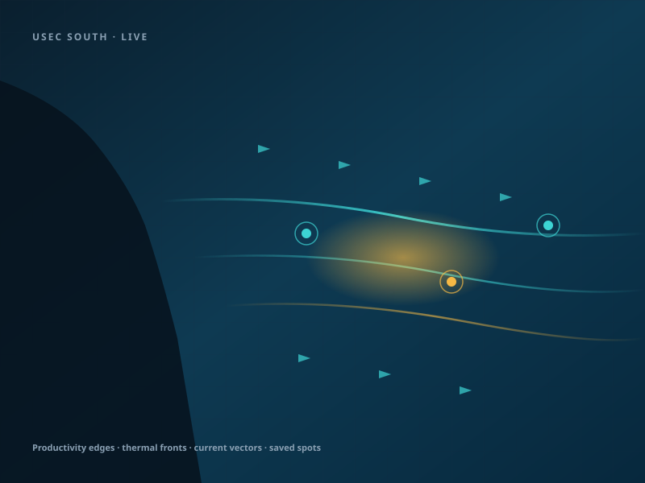

Live marine intelligence for tournament captains
Shape the future of tournament fishing.
Join the FishEdge Captain Pilot. Get free access this season and help us build fishing intelligence tools you’ll actually use.
See the edges captains look for.
Built for tournament captains. Shaped by your feedback.

Live data freshness · refreshing…
Live ocean edges
Chlorophyll, temperature, thermal fronts, currents — the productive boundaries captains actually watch.
Captain’s Daily Briefing
GO / WATCH / NO-GO verdict for your saved spots, refreshed every morning before first light.
Save your spots
Pin the places that matter. FishEdge watches them so you don’t have to.
Built with captains
The pilot is open to tournament captains across the East Coast. Tell us what works.
Upcoming tournaments
East Coast tournament fishing context. Updated as the calendar changes.
About FishEdge
FishEdge is the customer-facing product of DataNinjaAI. We build live marine intelligence tools that turn public satellite data into operational decisions for tournament captains.
“FishEdge” means two things. The productive edges in the water where fish congregate — temperature breaks, chlorophyll fronts, current boundaries. And the competitive edge captains need to make the right call before first light.
The Captain Pilot is open through the 2026 season. Free for tournament captains. We’d rather learn from ten serious captains than ship a product nobody uses.
Get in touch
Email captains@fishedge.live for pilot access, partnership, or feedback.